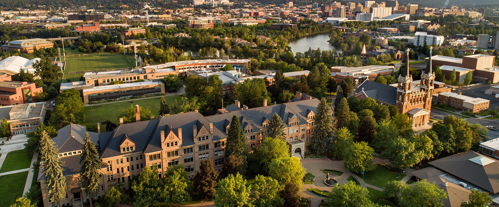

The Gonzaga Bulldogs are an intercollegiate men's basketball program representing Gonzaga University. The school competes in the West Coast Conference in Division I of the National Collegiate Athletic Association (NCAA). The Gonzaga Bulldogs play home basketball games at the McCarthey Athletic Center in Spokane, Washington, on the university campus. Gonzaga has had 15 of its players receive the WCC Player of the Year award,[2] and two players, Frank Burgess in 1961 with 32.4 points per game, and Adam Morrison in 2006 with 28.1 points per game, have led the nation in scoring. Morrison was named the Co-National Player of the year for the 2005–06 season. Since the mid-1990s, Gonzaga has established itself as a major basketball power in a mid-major conference. They have been to every NCAA Tournament held since 1999, a year in which they made a Cinderella run to the Elite Eight, and have appeared in every final AP poll since the 2008–09 season. They have also appeared in every weekly poll since the start of the 2016–17 season, a streak of 91 consecutive weeks, tied for the 22nd longest streak in Men's Basketball history, as well as the longest active streak in the nation. They have also appeared in all but one WCC conference title game since 1995, and in every conference title game since 1998, winning 16 of them. This culminated in 2016–17, when the Bulldogs went to their first Final Four in school history, advancing to the national championship game, where they lost to North Carolina. They returned to the Final Four in 2021, losing in the final round to Baylor...